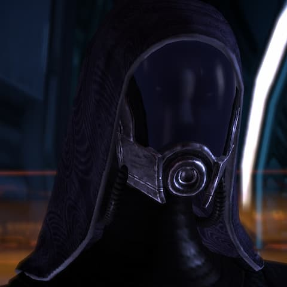

Tali'Zorah
Lugar de origen: La Flota Migrante Raza: QuarianaNacida en 2161 a bordo de la Rayya, Tali’Zorah es una ingeniera que está haciendo la peregrinación, el rito de pasaje quariano a la adultez y que debe completar para volver a su nave de origen. Es increíblemente capaz para su edad y le impresionan los avances tecnológicos presentes en la Normandía.